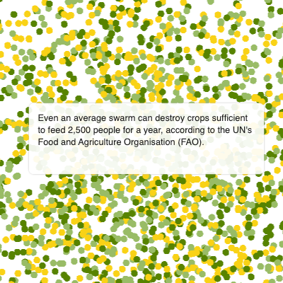
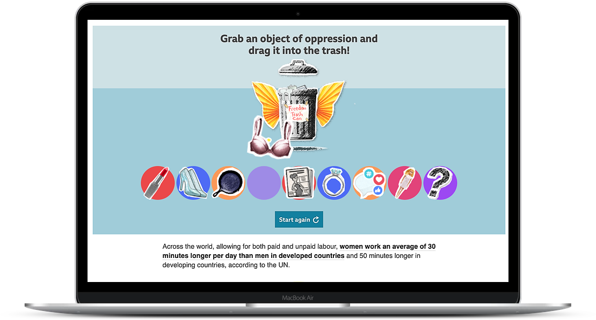
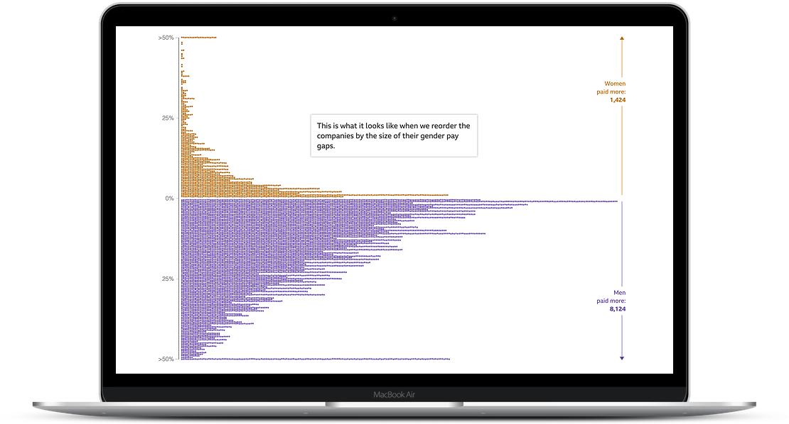
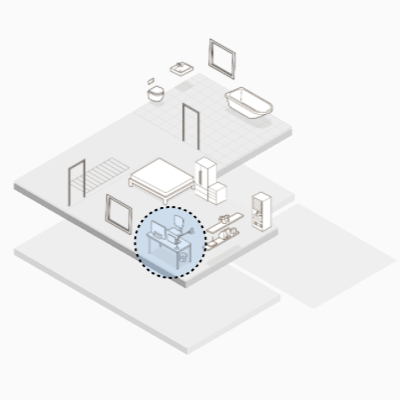
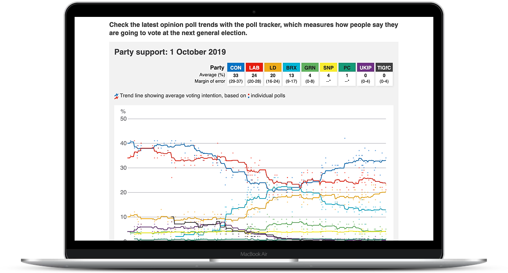
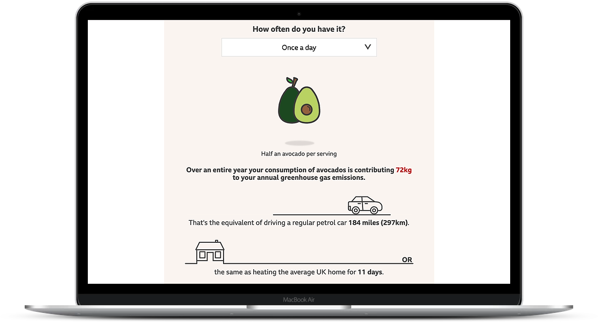
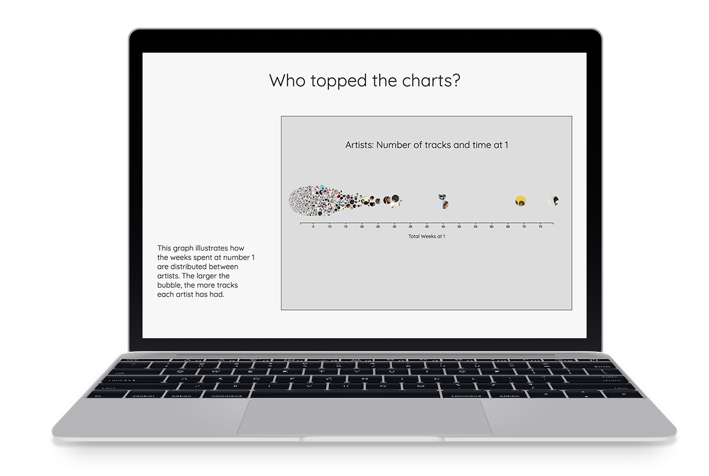
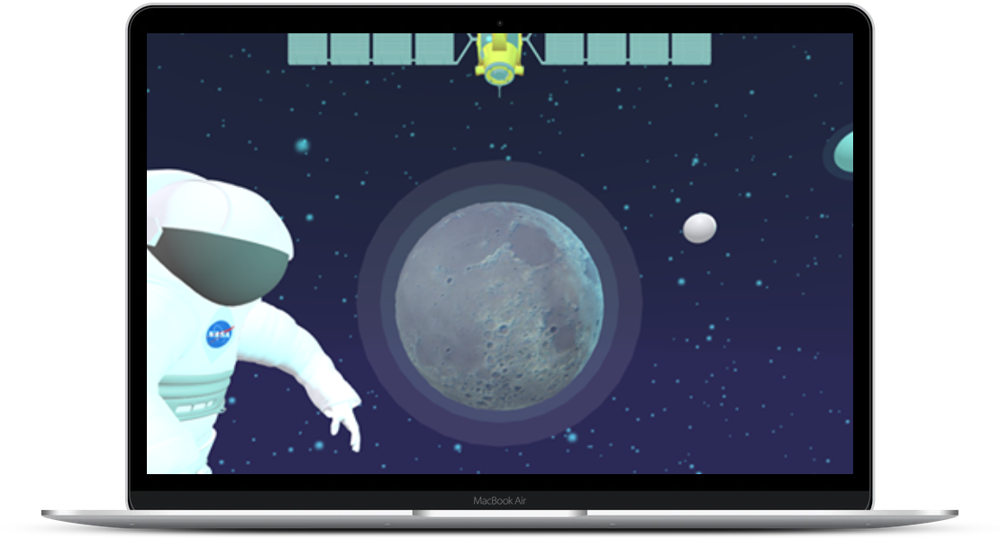

FESTIPAL GREEN MAN ’2512:30 ALICE PHOEBE LOU14:00 FONTAINES D.C.16:15 BIG SPECIALYOUR WEEKEND, TOGETHER ♫
FestiPal
A Green Man festival app for making a schedule, sharing with friends and discovering new music.
SELECTED WORK & OTHER CURIOSITIES
A mix of data stories, product work, experiments and things I’ve learned along the way.
CASE STUDIES
OTHER PUBLISHED WORK

BBC NEWS · SCROLLYTELLINGCSS animation, D3 and REGL bring the transformation of a locust swarm to life, with an animation toggle and a graceful no-JavaScript fallback.
Read the story ↗
BBC NEWS · INTERACTIVELead developer on a drag-and-drop story about what women would like to throw away, with keyboard and screen-reader alternatives. Published in 25 languages.
Read the story ↗
BBC NEWS · DATA STORYTELLINGOne of the team’s first scrollytelling projects: over 10,000 data points, WebGL rendering and an animation toggle designed in from the start.
Explore the project ↗
BBC NEWS · SCROLLYTELLINGCo-developed a story imagining how our homes and offices might change after the pandemic; it reached over two million page views in its first three days.
Read the story ↗
BBC NEWS · ELECTIONSBuilt a data pipeline and update process for a polling chart, pictogram and table, with automated deployment and generated fallback images.
Read the tracker ↗
BBC NEWS · CLIMATEHelped people explore the climate impact of food choices, with accessible styling and keyboard-friendly ways to change selections.
Use the calculator ↗ BBC NEWS · HEALTH DATALed development on an update to the local health services tracker, including new mental health figures and mentoring two junior developers.
Read the tracker ↗ BBC NEWS · INTERACTIVELead developer on an interactive exploring the president’s comments about countries, built for progressive enhancement and accessibility.
Read the story ↗HOBBY PROJECTS
A calendar app to find the dates when the whole gang is free.
Visit the prototype ↗A Green Man festival app for making a schedule, sharing with friends and discovering new music.

Scraped chart history, Spotify audio data, analysis in R and interactive visualisations in D3. A favourite project that needs a refresh.
Read the write-up ↗
An immersive online and VR experience made for the NASA Space Apps Challenge. I created its soundtrack from NASA audio and original music.
Explore the experience ↗A small, practical guide ideated and built with a friend to make seasonal produce easier to discover.
A playful politics concept made with a friend, from data scraping through to implementation. The live version needs tracking down.
WRITING & SPEAKING
Want the timeline and details in one place?
Read my resume